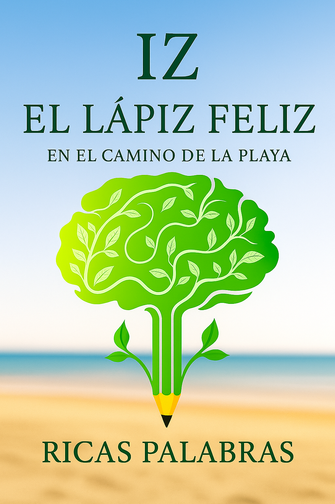

Obras y Escritos Conscientes
Explora cuentos, reflexiones y herramientas para el despertar de la conciencia.
Cuentos y Narrativas

Iz, el lápiz feliz (Interactivo)
Una adaptación infantil animada y visual del cuento. Ideal para los más pequeños, incluye una sección para descargar y colorear.
Leer ahora →

Iz, el lápiz feliz (Versión Original)
Una obra filosófica y espiritual que le habla al niño interior. Descubre el texto completo que dio vida a los 20 principios para evolucionar la conciencia.
Leer Texto →Escritos Conscientes y Herramientas

La Matriz Interna
Una guía para desarrollar tu estructura interna, integrar principios y conectar con tu Corazón Solar, basado en la filosofía de "IZ el Lápiz Feliz".
Explorar →
Ecoscritores
Una serie de reflexiones y ejercicios prácticos para activar la conciencia, la creatividad y la evolución a través de la escritura.
Descubrir →